Узнать человека
Личность врача, профессиональный путь, стиль общения.
Алексей Андреевич Ушаков · хирург-имплантолог
Предложение ПикАрт для центра профессора Ушакова, Москва
Личный бренд, экспертный контент и регулярное присутствие врача. От стратегии — к стандартному помесячному ведению.
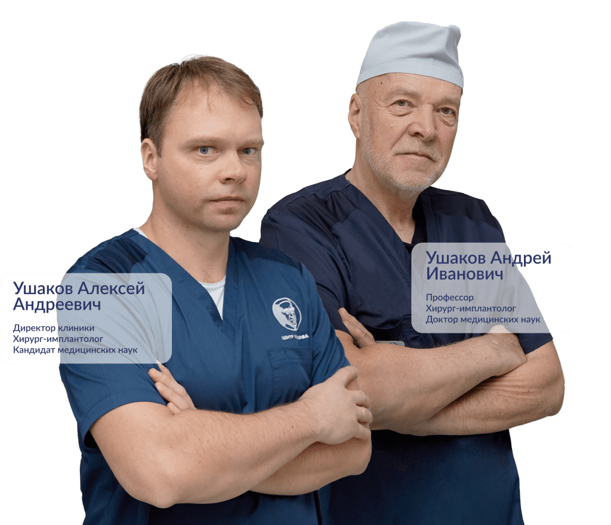
Развиваем личный бренд Алексея Андреевича Ушакова.
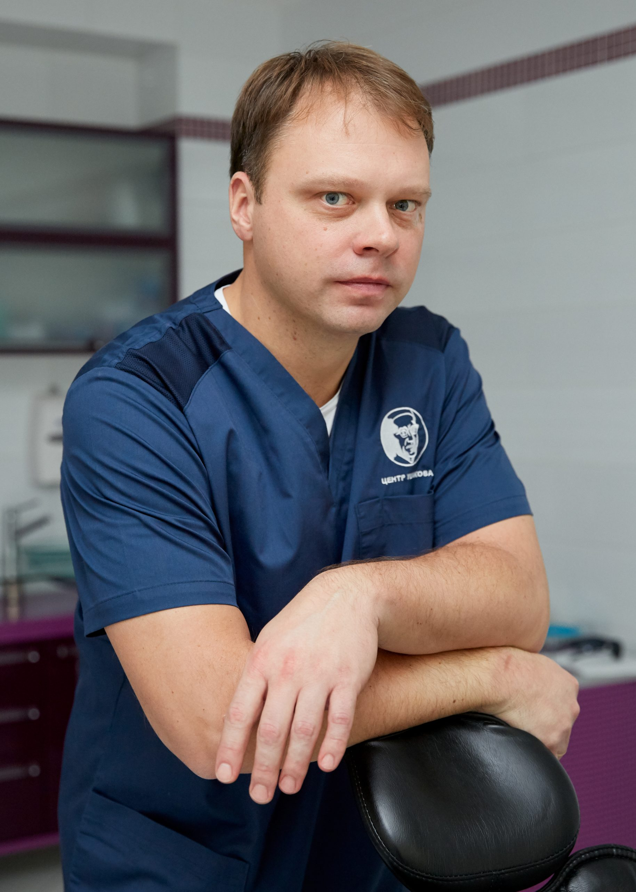
Личность врача, профессиональный путь, стиль общения.
Объяснения, ответы на вопросы и разборы практики.
Регулярный содержательный контент до первого посещения.
Платное привлечение — отдельный следующий этап.
Врач готов сниматься. Есть два длинных видео. VK рассматриваем как стартовую площадку; набор каналов согласуем.
Сайт, карты и личные профили должны помогать пациенту узнать врача и понять следующий шаг.
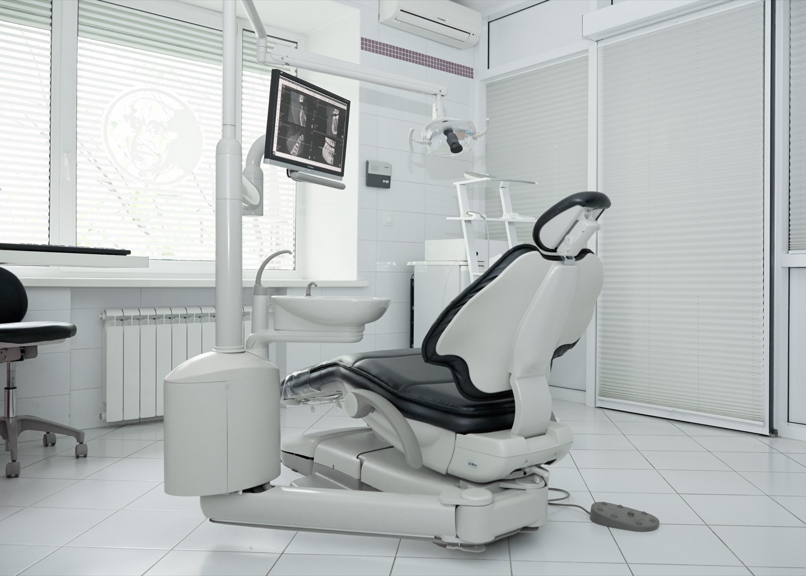
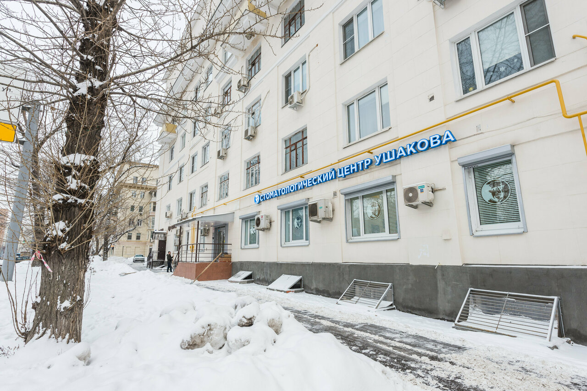
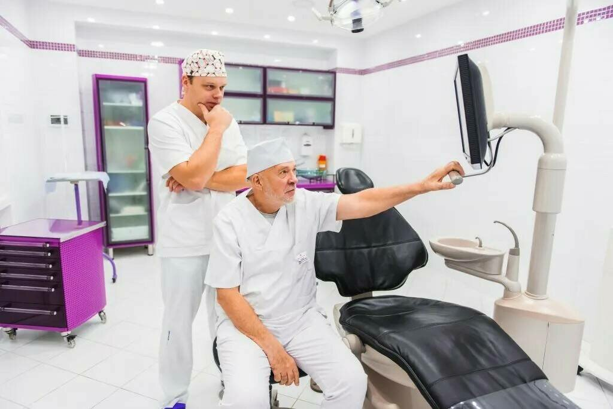
Реальная практика, фотографии центра и публичные отзывы.
Единый образ Алексея Андреевича, объяснение подхода и понятный переход к консультации.
Сайт и карточка на картах — две точки знакомства пациента с центром. Их фотографии, информация об услугах и путь к консультации должны поддерживать одно представление о клинике.
Предлагаем сверить сведения, объяснение стоимости и переход к записи, затем использовать реальные материалы центра в контенте.
Открыть карточку клиники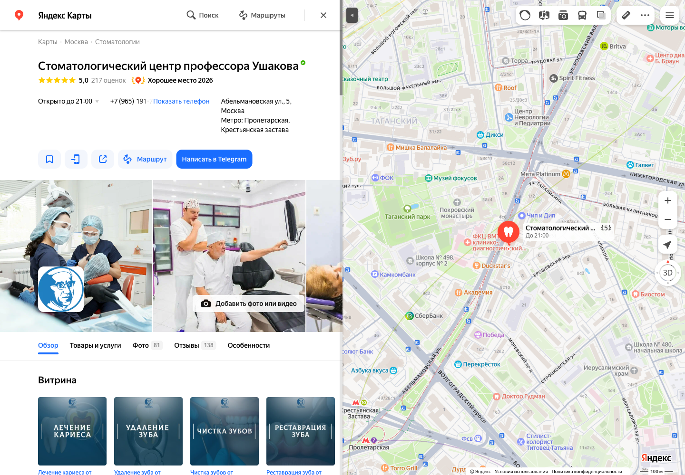
16 клиник с имплантацией вокруг центра на Абельмановской, 5. Выберите расстояние для сравнения.
| Клиника и адрес | Расстояние | Что предлагают | Что предлагаем в SMM |
|---|---|---|---|
| Династия врачейТалалихина, 2/1, стр. 7 | ≈ 190 м | Имплантация и восстановление; акцент на полном плане лечения. | Серия постов «Путь к восстановлению»: врач объясняет этапы от обследования до результата. |
| МедальеТаганская, 36, корп. 2 | ≈ 430 м | Варианты восстановления; объяснение All-on-4 и седации. | Короткие видео «Варианты восстановления»: кому подходят и какие ограничения обсуждают с врачом. |
| Имплант СитиМарксистская, 5 | ≈ 450 м | Три варианта плана, подробная смета, фиксация стоимости договором. | Пост-карточки «Почему планы лечения разные»: сравнение вариантов и логики расчёта с комментарием врача. |
| Клиника и адрес | Расстояние | Что предлагают | Что предлагаем в SMM |
|---|---|---|---|
| ROOTT · ПролетарскаяВолгоградский пр-т, 4А | ≈ 660 м | Консультация специалистов, КТ/ОПТГ и план с фиксированными ценами. | Закреплённый пост «Первая консультация»: что обсудим с Алексеем Андреевичем и как записаться. |
| Центр Михаила ОрджоникидзеВолгоградский пр-т, 8 | ≈ 680 м | Варианты плана; отдельное обращение к главврачу со сложным случаем. | Рубрика «Сложный вопрос врачу»: короткие ответы Алексея Андреевича на вопросы будущих пациентов. |
| ЗефирНоворогожская, 6, стр. 1 | ≈ 820 м | Выбор имплантатов и план на осмотре; понятный маршрут. | Видео-маршрут до клиники и сторис-знакомство с местом приёма врача. |
| Клиника и адрес | Расстояние | Что предлагают | Что предлагаем в SMM |
|---|---|---|---|
| Менделеев · ТаганскаяБольшие Каменщики, 9 | ≈ 1,1 км | КТ, совместная консультация, варианты под ситуацию и бюджет. | Видео «Что влияет на план и стоимость»: врач объясняет факторы выбора лечения. |
| Smile-at-Once · ТаганскаяСтаниславского, 11 | ≈ 1,1 км | Разные системы и сценарии; витринная цена требует уточнения состава. | Карточки «Что входит в цену»: отдельно имплант, установка, коронка и возможные дополнительные этапы. |
| Клиника и адрес | Расстояние | Что предлагают | Что предлагаем в SMM |
|---|---|---|---|
| Центр Стоматологической ИмплантологииОзерковская наб., 26 | ≈ 2,1 км | Координатор: объяснение плана, визиты и напоминания. | Серия сторис «До первого визита»: запись, подтверждение, подготовка и связь с администратором. |
| Стоматология ГлотоваСтремянный пер., 2 | ≈ 2,4 км | Имплантация «под ключ» и полное восстановление. | Пост-разбор «Что значит под ключ»: объяснение состава лечения без обещания одинаковой цены всем. |
| МЕДСИ · СолянкаСолянка, 12, стр. 1 | ≈ 2,7 км | Установка разных систем; коронка и другие этапы отдельно. | Серия карточек «Стоимость по этапам»: диагностика, хирургия, ортопедия — по утверждённому прайсу. |
| Клиника и адрес | Расстояние | Что предлагают | Что предлагаем в SMM |
|---|---|---|---|
| Лёгкая стоматология · Автозаводская1-й Кожуховский пр-д, 11 | ≈ 3,4 км | Консультация, снимок и план; один зуб и All-on-4. | Рубрики по ситуации: «Нет одного зуба» и «Нужно полное восстановление» — с объяснениями врача. |
| ОртоПоинтСайкина, 13 | ≈ 3,4 км | Разные системы имплантов; консультация и план. | Короткое видео «Как я выбираю имплант»: критерии Алексея Андреевича и ограничения метода. |
| Центр Современной Стоматологии · БауманскаяБауманская, 32, стр. 2 | ≈ 4,0 км | Установка и коронка — отдельно и пакетным предложением. | Пост с наглядной схемой: отдельные этапы лечения и полная структура расчёта. |
| ImplantoffНижняя Красносельская, 35, стр. 3 | ≈ 4,4 км | Консультация и варианты плана; индивидуальные состав и цена. | Видео-ответ «Почему нельзя назвать точную цену по фото»: что врач уточняет на консультации. |
| СМ-Стоматология · ВолгоградскийВолгоградский пр-т, 42, корп. 12 | ≈ 4,5 км | Диагностика и имплантация в клинике полного профиля. | Контент «Врач и команда»: видео Алексея Андреевича о взаимодействии хирурга и ортопеда в лечении. |
Расстояния по прямой; подборка не исчерпывающая. Источники проверены 13.10.2026. Последняя колонка — идеи контента ПикАрт для соцсетей врача.
Из наблюдений за конкурентами — в конкретные рубрики, публикации и короткие видео.
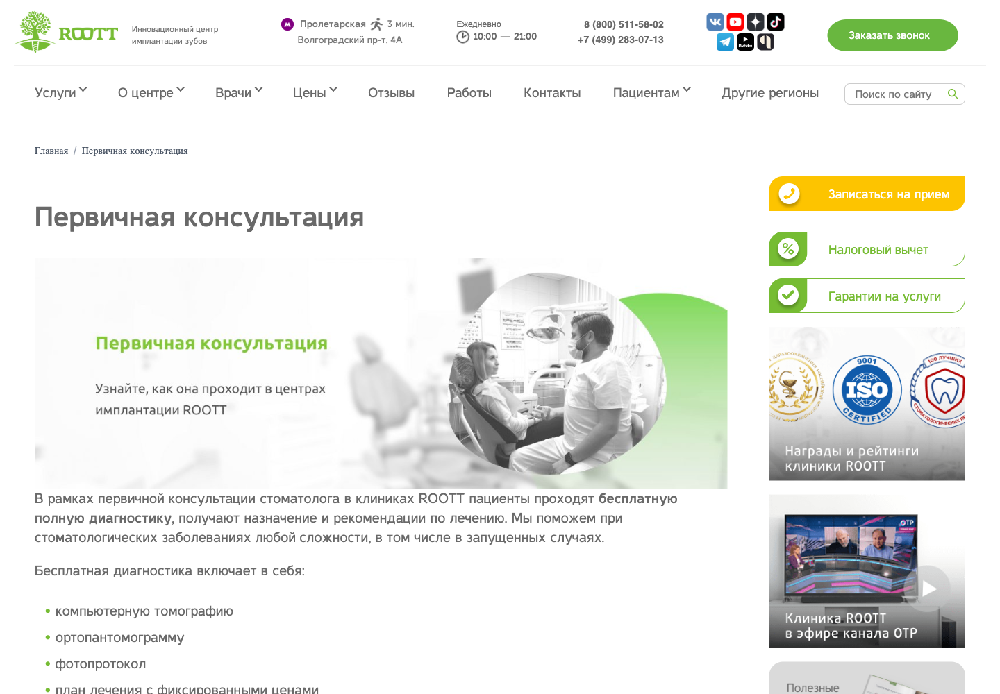
Пост «Что обсудим на первой консультации»: знакомство с врачом, вопросы пациента и понятный способ записи.
Диагностика и план с фиксированными ценами перечислены рядом с первым шагом.
Официальный источник · 13.10.2026
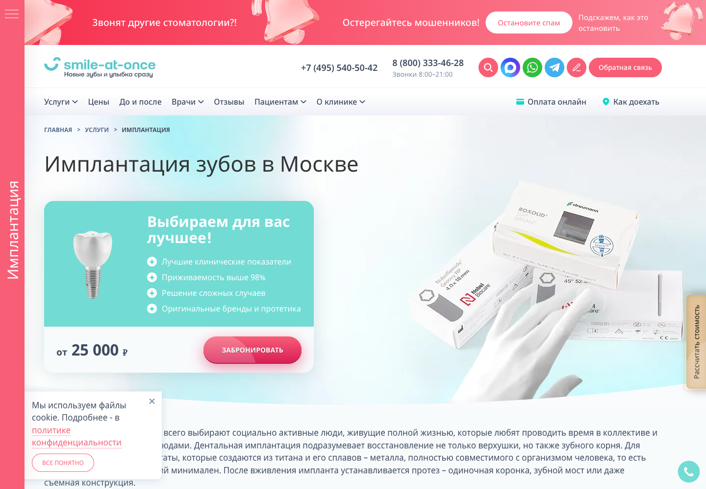
Серия «Что входит в цену»: объясняем этапы и состав стоимости по утверждённым условиям центра.
На первом экране «от 25 000 ₽». В прайсе это имплант Dentium без установки и коронки; такой оффер нельзя сравнивать с лечением под ключ.
Страница · прайс и исключения · 13.10.2026
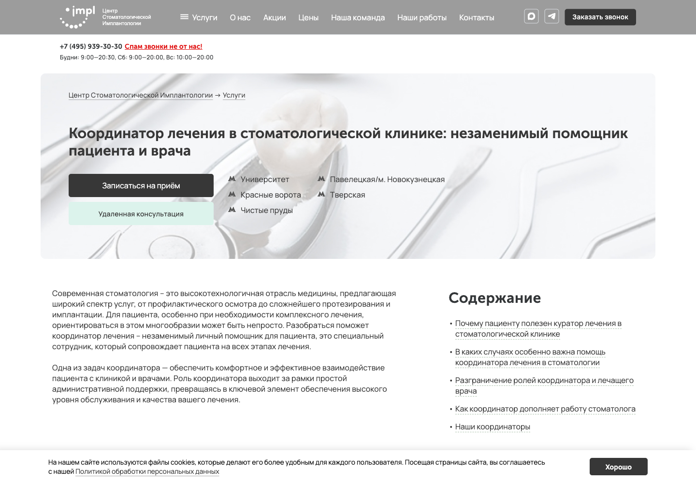
Серия «До первого визита»: как записаться, что подготовить и куда написать по организационным вопросам.
Координатор помогает понять план и организовать визиты; медицинские решения остаются за врачом.
Официальный источник · 13.10.2026
Наше предложение на основе конкурентного анализа.
Знакомим с Алексеем Андреевичем через личный контент, объясняем решения в экспертных роликах и помогаем подготовиться к консультации через посты и сторис.
Закреплённый пост и короткое видео: что обсудит врач, как подготовиться и куда написать для записи. Содержание сверяем с центром.
Карточки и видео с объяснением состава цены: что включено, какие этапы отдельные и что определяется после обследования. Используем утверждённый прайс.
Основание: исключения Smile, прайс ROOTT.
Отдельные темы для постов и роликов: один отсутствующий зуб, несколько зубов, вопросы о недостатке кости. Объяснения согласует врач.
Основание: Smile.
Оформить навигацию, закреплённые материалы и сторис о записи: как обратиться к администратору и что подготовить к визиту.
Основание: ЦСИ.
Памятки, карточки и сторис перед консультацией; клинические разборы с пояснениями врача — на реальных материалах и с необходимыми согласиями.
Основание: вопросы ROOTT, структура объяснений Smile.
Согласовать описание профиля, фотографии, оформление и навигацию по рубрикам. В центре коммуникации — Алексей Андреевич и его подход.
Личный контент знакомит с врачом; экспертные объяснения раскрывают подход; сервисные публикации помогают подготовиться к обращению. Темы и медицинские формулировки согласуем с Алексеем Андреевичем.
Личные профили двух врачей рассматриваем отдельно от рейтингов центра.
Проверка 13.10.2026. В Яндекс Медицине — процент рекомендаций, а не звёздный рейтинг. Отзывы площадок могут пересекаться, их не суммируем.
Сверить сведения и фотографии Алексея Андреевича, связать профили с клиникой. Работа с отзывами — в согласованном объёме.
Стратегия определяет, что и для кого говорим. Ведение превращает это в материалы.
Позиционирование, аудитория, рубрики и план.
Оформление профиля, тексты, дизайн и публикации.
Сценарии и производство видео по отдельно согласованной смете.
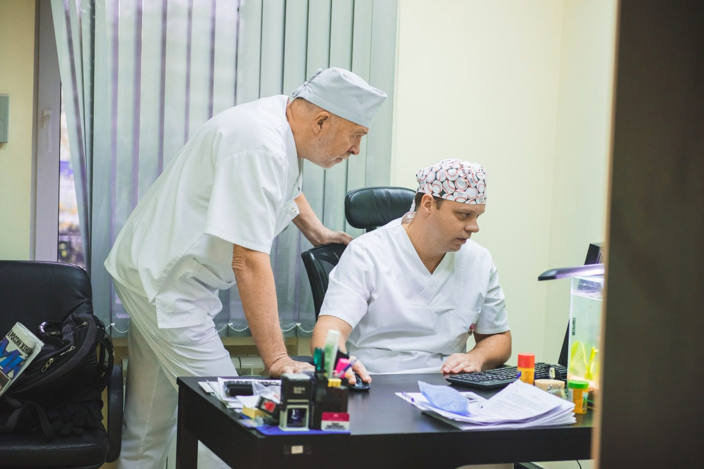
Интервью с врачом, аудитория будущих пациентов, отличие подхода, рубрики и роль площадок. Сравнение конкурентов используем как материал для выбора решений.
Результат: согласованный документ стратегии, список подтверждаемых тезисов и контентный план.Профиль, описание врача, навигация по материалам, тексты и дизайн. Основная предлагаемая площадка — VK. Дополнительные каналы выбираем вместе.
Результат: оформленный профиль и согласованные материалы выбранного объёма. Дублирование в Telegram — предлагаемый дополнительный вариант.Сценарии до минуты: объяснения подхода, ответы на вопросы, знакомство с врачом. Проверить возможность адаптации двух уже опубликованных длинных видео.
Готовность сниматься подтверждена. Съёмочные даты, команда, монтаж и количество роликов ещё не оценены в смете.Сверить сведения именно об Алексее Андреевиче, его фотографии и объяснения подхода; связать их с клиникой и её публичными карточками.
Обновление профилей, ответы на отзывы и SERM — только в согласованном объёме. В центре контента — Алексей Андреевич.Выпуск материалов, охват релевантной аудитории, внимание к видео, содержательная вовлечённость и интерес к профилю. Базовые данные и определения фиксируем на старте.
Конкретные целевые значения пока не заданы. Заявки, подписчики и узнаваемость — разные показатели, не взаимные гарантии.Пять видов контента для личного бренда Алексея Андреевича. Чередуем их в течение месяца.
| Вид контента | Задача | Что будем делать |
|---|---|---|
| Личный и доверительный | Познакомить с врачом и его принципами. | Видео от первого лица: «Что для меня важно в общении с пациентом». |
| Экспертный | Понятно объяснить подход и ответить на вопросы. | Короткий ролик: «От чего зависит план имплантации?» |
| Клинические разборы | Показать логику решения на реальном случае. | Пост-карточки: ситуация → варианты → выбор врача → этапы. С согласиями пациента. |
| Сервисный | Помочь подготовиться к обращению. | Сторис и памятка: «Первая консультация: что взять и о чём спросить». |
| Продающий | Объяснить повод для обращения и следующий шаг. | Пост-приглашение: «Планируете имплантацию? Вот что обсудим на консультации». |
Посты, карточки, короткие видео и сторис. Темы и медицинские формулировки согласуем с врачом; съёмка и монтаж рассчитываются отдельно.
Посмотреть рубрики и примеры подробнееВ течение месяца чередуем знакомство, объяснения, практику, помощь и приглашение на консультацию.
Познакомить с врачом до первого приёма: услышать его речь, увидеть стиль общения и профессиональные принципы.
Форматы: видео от первого лица, интервью, фотопосты, сторис.
Пример: «Что я объясняю пациенту перед имплантацией».
Объяснить имплантацию понятным языком и помочь пациенту подготовить вопросы врачу.
Форматы: короткие видео, посты с объяснениями, карточки, ответы на вопросы.
Пример: «Какие вопросы задать врачу, если вам сказали, что кости недостаточно».
Показать реальную практику врача и объяснить логику решения в конкретной ситуации.
Форматы: разбор с комментарием врача, последовательность карточек, видео с пояснениями.
Пример: «Как выбирали план имплантации в конкретном случае».
Используем реальные материалы с необходимыми согласиями. Врач проверяет разбор; результат одного пациента не обещаем всем.
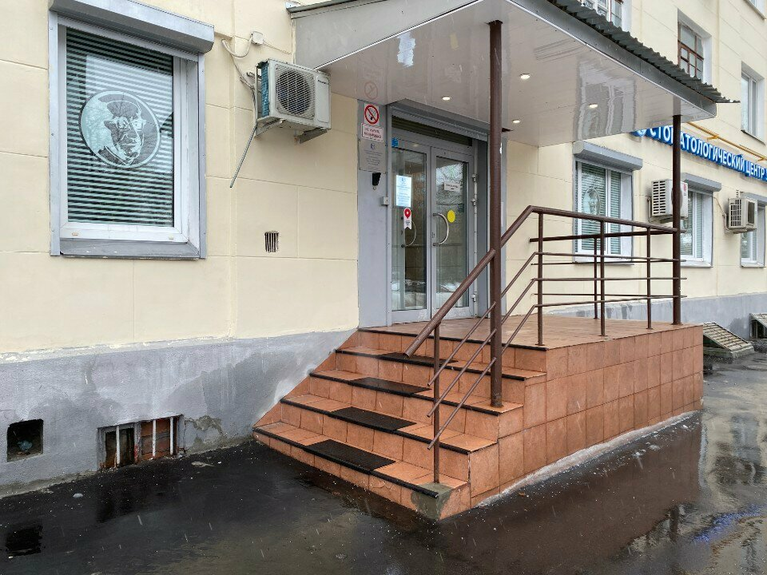
Сделать обращение понятным: куда написать, как подготовиться и что обсудить на приёме.
Форматы: памятки, закреплённые посты, сторис с навигацией, видео о приёме.
Пример: «Первая консультация: что подготовить и о чём спросить».
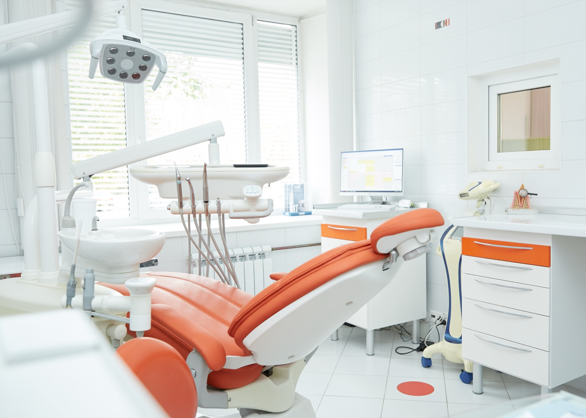
Объяснить, с какими вопросами можно обратиться к врачу, и предложить понятный следующий шаг.
Форматы: пост-приглашение, короткое видео врача, сторис с условиями обращения.
Пример: «Планируете имплантацию? Вот что обсудим на консультации».
Спокойная подача без давления и обещаний результата. Наличие приглашений в контенте не означает гарантию заявок от ведения.
В контент-плане чередуем знакомство с врачом, экспертные объяснения, клинические разборы, полезные памятки и приглашения на консультацию. Одну тему адаптируем в пост, короткое видео и сторис. Соотношение рубрик выбираем после интервью и корректируем по ежемесячному отчёту.
Врач готов сниматься. Подготовим сценарии коротких роликов и посмотрим, какие фрагменты двух существующих длинных видео можно использовать. Объём съёмки и монтажа согласуем отдельно.
Календарь запуска согласуем после интервью и получения материалов.
Выпуск, охват, досмотры, вопросы и сохранения. Оцениваем внимание аудитории; это не гарантия заявок.
Ежемесячно оцениваем выпуск материалов и внимание будущих пациентов. Сравниваем с исходными данными и предыдущими месяцами; не приравниваем эти показатели к лидам.
Раздельно фиксируем выпуск, охват и качество интереса. Географию и состав аудитории оцениваем в пределах доступной статистики; не называем каждый просмотр московским пациентом.
Подписки полезны как один из сигналов. Наблюдаемое внимание не равно доказанной узнаваемости, а узнаваемость не гарантирует будущую запись.
Алексей Андреевич проверяет медицинские объяснения перед публикацией. Условия услуг и стоимость сверяем с клиникой, материалы пациентов используем с необходимыми согласиями.
Рассказываем о подходе и практике без обещаний одинакового результата для всех. Для рекламных материалов отдельно согласуем допустимые формулировки и оформление.
Три фиксированных варианта в месяц. SMM-стратегия — 65 000 ₽ разово.
69 000 ₽в месяц
Количество публикаций и сторис уточняется.
109 000 ₽в месяц
Количество публикаций и сторис уточняется.
159 000 ₽в месяц
Количество публикаций и сторис уточняется.
Первый месяц с базовым ведением и стратегией — 134 000 ₽.
Съёмка, монтаж и дополнительные работы. Реклама — следующий этап.
Позиционирование Алексея Андреевича, аудитория, рубрики, форматы и план ведения. Согласуем стратегию перед регулярной работой.
Первый месяц базового ведения с отдельной стратегией — 134 000 ₽. Далее ведение — 69 000 ₽ в месяц.
Съёмка и монтаж видео, работа с отзывами, обновление сайта и настройка аналитики рассчитываются отдельно по нужному объёму.
Платная реклама и рекламный бюджет — отдельный следующий этап. В стоимость ведения они не включены.
Стратегия, площадки, ведение и производство видео — фиксируем в итоговом составе работы.
Объём публикаций, площадки, съёмку и монтаж. Затем — смета, материалы и дата запуска.
Вернуться к вариантам